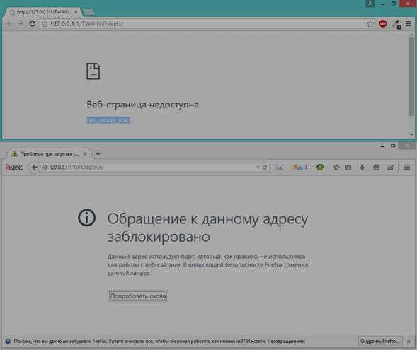
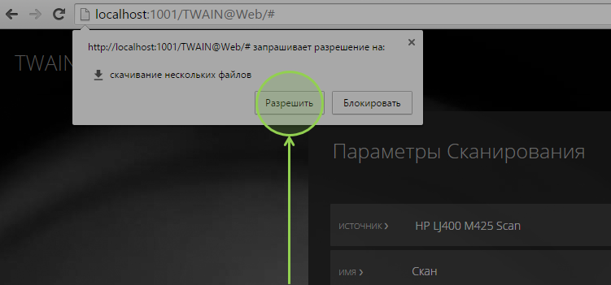

Включите выполнение JavaScript в настройках Internet Explorer. Для этого перейдите в настройки браузера выберите "Свойства браузера", перейдите на вкладку "Безопасность":
 В случае, если сканер подключен к ПК, на котором запущен Internet Explorer, необходимо выбрать зону "Местная интрасеть". Если сканер подключен к другому компьютеру, выберите зону "Интернет".
Нажмите кнопку "Другой..." для перехода к настройкам зоны. В появившемся окне найдите параметр "Сценарии" → "Активные сценарии" и выберите пункт "Включить".
В случае, если сканер подключен к ПК, на котором запущен Internet Explorer, необходимо выбрать зону "Местная интрасеть". Если сканер подключен к другому компьютеру, выберите зону "Интернет".
Нажмите кнопку "Другой..." для перехода к настройкам зоны. В появившемся окне найдите параметр "Сценарии" → "Активные сценарии" и выберите пункт "Включить".
 Обновите страницу, чтобы получить список устройств.
Обновите страницу, чтобы получить список устройств.
Закройте такие программы, как Службы, Диспетчер задач.
- HResult 0x8021000E - ошибка в драйвере устройства. Попробуйте перезапустить Wia, или перезагрузить ПК, или переустановить драйвер сканера.
Попробуйте настроить TWAIN@Web в конфигураторе на порт из диапазона: 80, 81, 1025-65535.

Нажмите кнопку "Разрешить" в запросе браузера на скачивание нескольких файлов.
